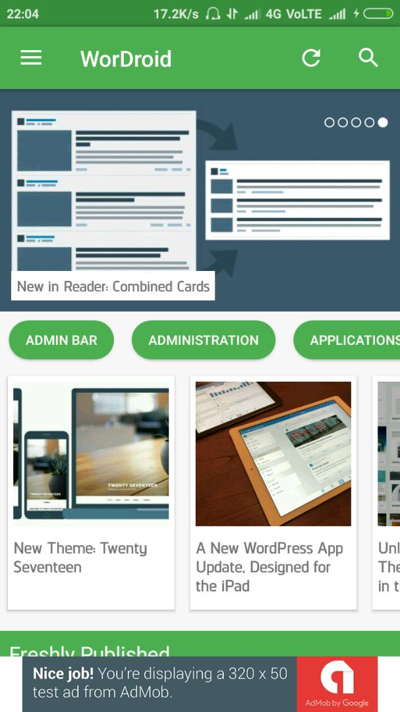
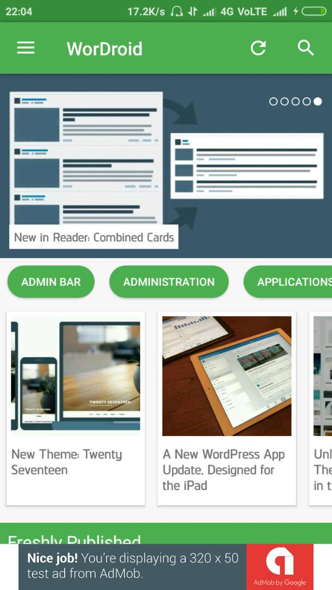

“WorDroid - Full WordPress Blog App” Documentation by “Anubhav Anand” v1.3
“WorDroid - Full WordPress Blog App”
Created: 15/04/2017
Updated: 19/06/2017
By: Anubhav Anand
Email: anubhavanand884@gmail.com
Thank you for purchasing my app. If you have any questions that are beyond the scope of this help file, please feel free to email via my user page contact form here. Thanks so much!
Table of Contents
- Changelog
- Introductions
- Showcase
- Installing JDK
- Installing Android Studio
- Import to Android Studio
- Installing Plugins
- Configuring App
- Setup Firebase
- Setup Firebase Auth (Login & Signup)
- Advance Customization
Changelog
=======Version 1.3=========
[Fixed] - Horizintall Posts gets doubled when reloaded
[Added] - Enable/Disable Ads from Config.java file
[Added] - Enable/Disable Intro Screen
[Added] - Enable/Disable Login & Signup
=======Version 1.2==========
[Added] Full Screen Iframe Video Support
[Added] Login and Signup Page (Google and Email/Password supported)
[Fixed] Play Store App Rejection
[Fixed] Notification when app is running
[Fixed] Other important bug fixes
=======Version 1.1==========
[Add] 1 Post Style Added.
[Add] Added Support for Android 7.1.
[Fix] Minor Bux Fixes.
[Fix] Better Tablet Support.
[Fix] Internal Links open in app.
A) Introduction - top
This is a Wordpress Blog App which fetches the posts, categories, images and other media from your blog using a JSON API offered either by JetPack or JSON API plugin for worpress. This app also pushes a notification whenever a post on your blog is updated or published.
WorDroid is full of features and still very easy to use. The features which is currently supported in this verion of WorDroid is:-
- Push Notifications
- AdMob Integration
- Firebase Analytics
- Firebase Authentication (Gmail and Email/Password)
- Crash Reporting
- Dynamic Links
along with these, this app gives you:-
- Material Design
- Intro Slider
- Splash Screen
- 15+ Themes
- 4 Post Styles (More styles coming in future versions)
- Built-In browser to open external links
- Image Viewer and Downloader
- Hetrogenous Post List
To make this app up and running, you'll need folling tools on your PC along with an active internet connection to download all the external dependencies:-
- Android Studio
- JDK
- An Emulator or Android Device (Optional)
The following plugins are required on your WordPress blog to make this app compatible with your WordPress blog:-
That's all you need to get going with this app. If you have everything setup the you can proceed to next step.
Here are few screenshots from the app.
B) App Showcase - top
 


C) Installing JDK - top
1. Click here to go to download page2. Click on Accept License Agreement checkbox
3. Now choose the version according to your operating system and download will start.
4. After downloading, install it as you install other softwares.
D) Installing Android Studio - top
This prject is compatible with Android Studio. So if you don't already have then go ahead and download Android Studio
1. Click here to go to download page2. Click on green Download Android Studio button.

3. Now a dialog appears which will ask you to accept terms and condition. Check the checkbox saying I have read and agree with the terms and conditions and then click on Download Android Studio
E) Importing Project in Android Studio - top
1. Extract the template file.2. Open Android Studio.
3. Click on Open an existing Android Studio Project

4. Now locate the extracted template file and click on OK

5. After that, Android Stuido will sync the project and will download all the dependencies. Make sure you are connected to internet. This will take a few minutes or so. Depending on your internet speed.
Make Changes to Gradle Files
The build.gradle file need to be configured little bit foe different systems. Here is the code you will find in the app based build.gradle file.

You may chnage applicationId, versionCode and versionName.
F) Installing WordPress Plugins - top
As you already know, we need these plugins to make the app work with our blogs.
Comparison Chart
| Features | JetPack | JSON API |
|---|---|---|
| Recent Posts | Supported | Supported |
| Recent Posts by Category | Supported | Supported |
| Search for Categories | Supported | Not Supported |
| Search in All Posts | Supported | Supported |
| Read Comments | Supported | Supported |
| Post Comments | Not Supported | Supported |
Note that other features that are common are not included in the comparison.
Installing API Plugin
1. Go to your WordPress blog dashboard.
2. Navigate to Plugins -> Add New
3. Search For Jetpack or JSON API. (Depends on which plugin you want to use)
4. Install and Activate the plugin
If you choose JetPack
Go to Jetpack > Settings in your dashboard, and click to activate the JSON API feature.
If you choose JSON API
Go to Settings > JSON API activate Respond module
Installing WP-FCM plugin
1. Go to your WordPress blog dashboard.
2. Navigate to Plugins -> Add New
3. Click on Upload
4. Choose the JSON API Plugin you've downloaded from here
5. Click on Install Now
In order to make this plugin push notification to users, you need to provide the Server Key. Leave it for now. We will add it ahead.First let's configure app
G) Configure App - top
To configure the app you just need to pur your URL on 2 files. Most of the configuration will be done from Config.java. To open this file, press SHIFT twice and type in Config.java and hit ENTER.
Put your blog URLIn the Config.java, find the variable SITE_URL and replace the value en.blog.wordpress.com with your blog URL.
NOTE: Do not put http or www in your URL
If You are Using JetPack
Make the useJetpack equal to true
//Enable/Disable JetPack API static final boolean useJetpack = true; //true or false
If You are Using JSON API
Make the useJetpack equal to false
//Enable/Disable JetPack API static final boolean useJetpack = false; //true or false
Code Explanation
//Global Site Settings
public static final String SITE_URL = "en.blog.wordpress.com"; //without www and http
public static final int PER_PAGE = 10;
public static final int CAROUSEL_ITEM_COUNT = 5;
public static final int HOT_ITEM_COUNT = 8;
//Enable/Disable JetPack API
static final boolean useJetpack = true; //true or false
//Only Change if you are using JSON API plugin
static final String apiBase = "api";
//Show custom categories on homescreen
static final String[] categoriesOnHome={};
//static final String[] categoriesOnHome = {"Better Blogging","Application","Dashboard","Customization"};
static final boolean disableBannerAd = false; //making it true will disable all banner ads
static final boolean disbleInterstitialAd = false; // making it true will disable all Interstitial ads
static final boolean disableIntroScreen = false; //making it true will disable Intro Screen
static final boolean disableSignUpSignIn = true; //making it true will disable all SignIn and Sign up
Line 2: The variable SITE_URL is used by application at different places. So putting your URL here will make changes everywhere
Line 3: PER_PAGE is used to indicate the number of post to load in one request. Making it larger will code more data and will also make the app slower.
Line 4: CAROUSEL_ITEM_COUNT indicates the number of posts to load in sliding carousel layout on homescreen. (Homescreen only)
Line 5: HOT_ITEM_COUNT indicates the number of posts to load in horizontall scrolling post layout on homescreen. (Homescreen only)
Line 8: useJetpack is a boolean variable. If you are using JetPack plugin for JSON API then make it true and if you are using JSON API plugin then make it false.
Line 10: apiBase holds the base API URL of your JSON API plugin. This is only required if you are using JSON API plugin. You can get the API Base from Dashboard > Settings > JSON API.
Line 12: categoriesOnHome is a string array. If you want to show custom categories on homepage then just put it in the array. Line 13 is an example of custom categories on homepage.
Editing App Manifest File
Edit your AndroidManifest.xml file to make some of the important changes. Edit the indicated parts and replace it with yours.
Line 35 indicates the URL of your blog. Whenever this link in the browser is clicked, you app open up automatically. Put your blog URL without http or www
Line 36 indicates the type of connection. If you blog uses SSL and is accessible on https then leave it but if your blog uses http then put http instead of https
Line 37 is the custom string to open the app using a custom URI scheme. Just put your site title here (lowercase and without spaces)
Latest Posts by Categoreies setting
1. Press SHIFT twice and search for strings.xml and hit ENTER
2. You will find code like this
- Latest
- Community
- Design
- Events
- General
- Better Blogging
3. Replace then with your category. You can add as many categories you want
Change App Name & Slogan
1. Press SHIFT twice and search for strings.xml and hit ENTER
WorDroid A WordPress Blog Reader
2. Replace your title with WorDroid to change app's title
3. Replace your slogan with A WordPress Blog Reader to cahnge app's slogan
H) Setup Firebase - top
Firebase provides us all the useful tools required to analyse our audience and grow. We are using follwing firebase features in our app.
- Firebase Analytics
- AdMob
- Crash Reporting
- Cloud Messaging
In order to make them work, we need a Firebase account and a google-services.json file provided when you add a project to your firebase account.
But before going further and creating an account on firebase, you should change your application package in order to add the project on firebasse.
Change Application Package - top
Every app on play store needs an unique package name. An example of page name is com.google.youtube. You'll also need a unique package name.
1. Change the package name in the manifest
2. Refactor the name of your package with right click -> refactor -> rename in the tree view, then Android studio will display a window, select "rename package"
3. Change manually the application Id in the build.gradle file : android / defaultconfig / application ID Then clean / rebuild the project
Sign Up For Firebase - top
1. Click here to go to firebase console
2. Click on Get Started For Free
3. Then click on Create New Project
4. Now feed the Project Name and Country and click Create Project
5. Now click on Add Firebase to your Android app
6. Now enter the Package Name and App Name and click on Register App
7. Now click on Download google-services.json and copy it to the specified directory.
8. Click Continue. You don't need to do anything here. Everything is already added.
9. Click Finish
Firebase Analytics - top
If the google-services.json file is placed in its directory then congratulations. Your app is now configured to send Analtics data
Showing Ads (AdMob) - top
To enable AdMob you just need to create Ad unit. Just copy the AdUnit and replace it with our test AdUnit. That’s it.
1. Here is how to create ad unit properly. Create two Ad units first banner ad and second interstitial ad units. Node down the Ad ids.
2. Open strings.xml and paste in your ad units in banner_ad_unit and interstitial_ad_unit.
3. That's it. Now test your app.
Push Notifications - top
1. Go to Firebase Console
2. Click on the project.
3. Click on the GEAR icon on the top right side of the page.
4. Click Project Settings.
5. Click Cloud Messaging
6. Copy the Server Key.
7. Paste it in WP-FCM plugin settings.
Setup Firebase Authentication - top
Firebase authentication allows you to authenticate users with there Email or Google account. Using this is very easy because everything is pre configured.
All you have to do is "Just enable the firebase auth for Email and Google users" (See the screenshots below)
1. Go to https://console.firebase.google.com/
2. Choose your project.
3. Select "Authentication" from left sidebar menu.
4. Then click on "Sign-In Method" tab.

5. Here you will see a list of available sign in methods. The application currently supported only Google and Email Verification. So click on Email/Password and toggle to enable the module and click on Save. Do the same for Google

I) Deep Code Explanation (Need programming knowledge) - top
First lets get throught the skeleton of the app. Below is the list of java/xml file you'll need to edit to make advance changes. Here is the list of post styles supported currently in this version.
1. Open project in android studio
2. Go to app > res > menu > activity_main_drawer.xml
3. Add your item anywhere.
4. Go to HomeActivity.java file and add follwing lines after the last else statement in the onNavigationItemSelected(MenuItem item) method
else if (id == R.id.your_unique_nav_id) {
//Do something when the item is clicked
}
5. Now you have to decide what you want to show when menu is clicked. If you want to open a category when link is clicked then just add this
else if (id == R.id.your_unique_nav_id) {
intent = new Intent(getApplicationContext(),CPListActivity.class);
intent.putExtra("category","YourCategory");
}
Or if you want to open an external link then paste this
else if (id == R.id.your_unique_nav_id) {
new FinestWebView.Builder(getApplicationContext()).theme(R.style.FinestWebViewTheme)
.titleDefault("Loading...")
.showUrl(true)
.statusBarColorRes(R.color.colorPrimaryDark)
.toolbarColorRes(R.color.colorPrimary)
.titleColorRes(R.color.finestWhite)
.urlColorRes(R.color.finestWhite)
.iconDefaultColorRes(R.color.finestWhite)
.progressBarColorRes(R.color.white)
.stringResCopiedToClipboard(R.string.copied_to_clipboard)
.showSwipeRefreshLayout(false)
.menuSelector(R.drawable.selector_light_theme)
.menuTextGravity(Gravity.CENTER)
.menuTextPaddingRightRes(R.dimen.defaultMenuTextPaddingLeft)
.dividerHeight(0)
.gradientDivider(false)
.setCustomAnimations(R.anim.slide_up, R.anim.hold, R.anim.hold, R.anim.slide_down)
.show("https://www.example.com");
}
Understanding Layouts - top
| File Name / Class Name | Image |
|---|---|
| list_item_1.xml / Item1.java | |
| list_item_2.xml / Item2.java | |
| list_item_3.xml / Item3.java | |
| list_item_4.xml / Item4.java |
Now let's take a look at the Files/Activities used by the application.
{kind=link}
{kind=link}
{kind=link}
{kind=link}
{kind=link}
Custom Post Style on Any Of Above Screens (Except HomeScreen) - top
If you want to change the post type of any of the pages above, then just open the java file specified and find for the item. Suppose if you want to replace Item1 with Item2 then search for Item1 and replace it with Item2. And so on.
Current available post styles are Item1,Item 2,Item 3 and Item 4. Take a look at them
Add Interstitial Ads on Any Screen - top
Open the equivalent java file of the screen and find the method onCreate(Bundle savedInstanceState) and paste the followning code just before the closing of onCreate(Bundle savedInstanceState) method
final InterstitialAd mInterstitialAd;
mInterstitialAd = new InterstitialAd(this);
mInterstitialAd.setAdUnitId(getString(R.string.interstitial_ad_unit));
AdRequest adRequest = new AdRequest.Builder()
.build();
mInterstitialAd.loadAd(adRequest);
mInterstitialAd.setAdListener(new AdListener() {
@Override
public void onAdClosed() {
super.onAdClosed();
}
@Override
public void onAdLoaded() {
mInterstitialAd.show();
}
});
HomeScreen Fresh Pressed Section Customization - top
The Freshly Pressed section on the Home Screen can be customized to show any of the three post styles. Default is Item1. If you want to change it to Item2 or Item3 then just follow the below instructions.
1. Go to the HomeActivity.java
2. Search for private void setupcards(). You will find the code like this.
3. Change the list_item_1,item1_title,item1_category,item1_img with list_item_2,item2_title,item1_category and item2_img respectively. For example
This will show the 2nd post type on homescreen
This will show the 3rd post type on homescreen

Please Rate Us with 5 Star if you like our work. This helps us a lot.
Anubhav Anand